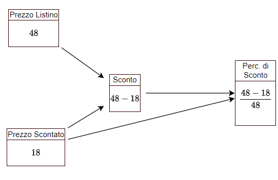

Problemi di I grado
UNITA' 1: Problemi ed equazioni: quantità e misure
In questo capitolo vedremo una serie di problemi che si possono risolvere con una equazione di I grado. Vediamo subito un esempio.
ESEMPIO 1
Maria ha 50 anni ed ha il doppio degli anni di sua figlia. Quanti anni ha la figlia di Maria?
Questo problema si può risolvere senza fare calcoli particolari, ma analizziamo cosa ci chiede e cosa dobbiamo fare per trovarlo. La prima cosa da individuare è cosa ci chiede di trovare, ossia quale è la quantità richiesta soluzione dell'esercizio, in questo caso gli anni della figlia di Maria.
Oltre a questa vediamo che si parla di un'altra quantità, o grandezza, diversa dalla prima, gli anni di Maria.
Tra gli anni della figlia e quelli di Maria c'è una relazione: gli anni di Maria sono il doppio di quelli della figlia (e quelli della figlia sono la metà di quelli di Maria). Noi non sappiamo quanti anni ha Maria, o la figlia, ma questo fatto ci dice che una delle due grandezze dipende dall'altra ossia che se la figlia ha
Decidiamo di chiamare gli anni della figlia con una lettera, detta "incognita", diciamo
Per completare il ragionamento osserviamo che il problema parla di un altro fatto: "Maria ha 50 anni". Questo secondo fatto obbliga gli anni di Maria ad essere uguali ad un numero specifico, cioè è una condizione" che impone un vincolo agli anni di Maria e quindi a quelli della figlia: infatti, gli anni della figlia possono essere
La traduzione in simboli della condizione è:
Questa è l'"equazione risolutiva del problema", che sarà vera quando
Il metodo per risolvere questi problemi si articola in quattro passi:
PASSO 1: Quantità o grandezze
PASSO 2: Dipendenze
PASSO 3: Incognita
PASSO 4: Condizione
Il primo passo è l'individuazione delle quantità nel testo del problema. Dopo aver letto attentamente il problema, tante volte quante sono necessarie per capire cosa dice, ossia quale situazione descrive, e cosa ci chiede, bisogna individuare:
Quali sono le quantità o grandezze di cui si parla nel testo del problema, sia la quantità richiesta, che tutte le altre;
Di quali grandezze o quantità si conosce anche la misura (detta anche valore o dato) e di quali no;
Una grandezza non è solo un "numero": la grandezza (o quantità) è un concetto, una proprietà quantitativa di qualcosa, come ad esempio la lunghezza di una strada, la lunghezza dei lati di un rettangolo, il peso di una persona, di un etto e mezzo di prosciutto, oppure l'importo di un pagamento, l'ammontare di un debito, il prezzo di un prodotto etc.
Il numero che è associato alla grandezza è la sua misura, ad esempio la lunghezza della strada è
Alle quantità deve essere dato un nome preciso ed appropriato.
ESEMPIO 2
Nella domanda "Quanti anni ha la figlia di Maria?", la quantità richiesta è il "Età (anni) della figlia di Maria";
Nella domanda "Quanti giornali ha venduto?", la quantità richiesta è il "Numero di Copie Vendute";
Nella domanda "Quanti soldi erano rimasti?", la quantità richiesta è l'"Importo Monetario Rimasto";
In "Trova le dimensioni del rettangolo", si parla di due quantità, la "Lunghezza della Base" e la "Lunghezza dell'Altezza";
In "Quanto tempo impiegherà Franco a risparmiare 200 euro?", si parla di due quantità: "Durata Periodo del Risparmio" e "Importo Risparmiato". Dell'Importo Risparmiato conosciamo anche la misura,
Come si vede, le somme di denaro vengono indicate come "importi", i periodi di tempo come "durate", poi abbiamo le lunghezze, i pesi ed altre grandezze.
ESEMPIO 3
Quali quantità sono presenti nella frase seguente?
"Nel suo testamento, una donna ha lasciato 20.000 euro a suo marito e 12.000 euro a suo figlio"
La prima è l'"Importo Eredità del Marito"; è una grandezza monetaria e la sua misura è 20.000 euro. La seconda è l'"Importo Eredità Figlio" che misura 12.000 euro.
Di quali quantità si parla nella frase seguente?
"Una trave di cemento è i due terzi del camion che la trasporta"
Si parla di tre quantità, che potremmo definire: "Lunghezza della Trave", "Lunghezza del Camion", "Rapporto Lunghezze Trave-Camion"; di queste conosciamo la misura (o il valore) solo della terza, e le quantità non sono indipendenti l'una dall'altra, ma la Lunghezza della Trave è uguale alla Lunghezza del Camion per due terzi.
ESERCIZIO 1.1 - Grandezze e misure
a) Quante grandezze riesci ad individuare nelle descrizioni seguenti? Scrivi un elenco e dai alle grandezze un nome appropriato.
Un palo è conficcato nel terreno per un terzo della sua lunghezza e per un quarto è immerso nell’acqua di un fiume. Il fiume è profondo
Una cassa contiene 140 palline tra nere e bianche. Togliamo
Tre sorelle hanno una età complessiva pari a
Due aerei decollano dallo stesso aeroporto nello stesso istante e volano in direzioni opposte. La velocità dell’aereo più veloce è di
b) Quante grandezze riesci ad individuare nelle descrizioni seguenti? Scrivi un elenco e dai alle grandezze un nome appropriato.
La signora Mueller ha investito una somma complessiva di
Giacomo dipinge una parete in
c) Quante grandezze riesci ad individuare nelle descrizioni seguenti? Scrivi un elenco e dai alle grandezze un nome appropriato.
Maria ed Antonio, se mettono insieme i loro risparmi, possiedono 64 euro.
Antonio ha 12 euro in più di Maria.
Un padre ha il doppio dell'età del figlio.
Abbiamo quattro numeri; il secondo supera di 13 il primo, il terzo supera di 14 il secondo, il quarto supera di 15 il terzo.
UNITA' 2: Dipendenze tra grandezze
Le grandezze di cui si parla nel testo di un problema non sono indipendenti l'una dalle altre e dopo averle individuate, si passa a capire come dipendono tra di loro. Facciamo alcuni esempi.
ESEMPIO 1
"Una trave di cemento è i due terzi del camion che la trasporta. E' più lunga la trave o il camion?"

Si vede chiaramente che la lunghezza della trave dipende da quella del camion e che se il camion, ad esempio è lungo
ESEMPIO 2
In una industria ci sono operai ed impiegati; gli operai superano di
Abbiamo "Numero di Impiegati" e "Numero di Operai". Le due non sono "indipendenti", cioè se ne conosciamo una l'altra la troviamo facilmente, perché se gli impiegati sono

Ogni grandezza ha un riquadro; se il riquadro ha una freccia entrante vuol dire che la misura della grandezza dipende da un'altra grandezza e si calcola in base ad una espressione. Oltre ad una espressione, la grandezza può avere come misura un numero, un dato che fa parte del testo e che viene riportato nel riquadro.
ESEMPIO 3
Una azienda ha avuto, nell'anno appena trascorso, un fatturato di
Nel testo si parla di due grandezze, "Fatturato" ed "Utile", ed una relazione tra di loro.

ESEMPIO 4
Un terzo di un palo è conficcato nel terreno, un quarto è immerso nell’acqua e la lunghezza del palo è completata dalla parte che emerge. Quante sono le grandezze e quali sono le relazioni tra di loro?
Le misure delle grandezze coinvolte sono espresse in relazione alla lunghezza del palo come riportato nella figura. L'ultimo pezzo del palo, la parte che emerge, è uguale a tutto il palo meno la parte in acqua e la parte in terra.

ESEMPIO 5
Un vecchio video game è stato ribassato da
Nel testo di questo problema sono citate tre quantità: prezzo Iniziale, che potremmo indicare con Prezzo Listino o
Il diagramma delle dipendenze è quindi il seguente.

ESERCIZIO 2.1 - Dipendenze tra grandezze
Per ciascuna delle descrizioni seguenti individua le grandezze coinvolte, la loro eventuale misura e disegna il diagramma delle dipendenze.
a) Nel suo testamento, una donna ha lasciato 20.000 euro a suo marito e 12.000 euro a suo figlio. Dopo la sua morte, le sue proprietà erano di sole 16.400 euro e la legge divide la proprietà in rapporto al lascito testamentario.
b) Una cassa contiene 140 palline tra nere e bianche. Togliamo
c) Tre sorelle hanno una età complessiva pari a
e) Una somma di 1750 euro deve essere divisa tra due persone e la seconda ha i tre quarti di quanto ha la prima.
UNITA' 3: Incognite
ESEMPIO 1
Una trave di cemento è i due terzi del camion che la trasporta e la lunghezza del camion è

Abbiamo che
ESEMPIO 2
Una trave di cemento è i due terzi del camion che la trasporta e la lunghezza della trave è

ESEMPIO 3
Una azienda ha avuto, nell'anno appena trascorso, un fatturato di
Nel testo si parla di "Fatturato", "Utile" e "Costo"., ed una relazione tra di loro.
Per cui

e l'equazione:
che ha soluzione
ESEMPIO 4
In una industria ci sono operai ed impiegati; gli operai superano di
Le quantità presenti sono due, numero degli impiegati e numero degli operai, sono dipendenti tra di loro e ci sono due modi di calcolare il numero di impiegati: sono sia
Possiamo dire quindi che se gli impiegati sono

L'equazione risolutiva è
ESEMPIO 5
Un terzo di un palo è conficcato nel terreno ed un quarto è immerso nell’acqua. Determina la lunghezza del palo sapendo che la parte che emerge è lunga
Riprendendo l'esempio precedente, qui si aggiunge il fatto che la misura della parte emergente è

e l'equazione risolutiva è:
La soluzione è
ESEMPIO 6
Un vecchio video game è stato ribassato da
Per risolvere il problema basta propagare i valori.
Sostituendo i numeri alle lettere otteniamo
ESERCIZIO 3.1 - Problemi sulla rappresentazione dell'età I
a) Rappresenta l’età indicata sulla base dell’età attuale nei casi seguenti.
Tra 10 anni se adesso ha
10 anni fa se adesso ha
Tra
f) Trova l’età di una persona (in anni) in ciascuna delle seguenti situazioni.
Tra 5 anni se aveva 20 anni 10 anni fa;
Tra
5 anni fa se avrà venti anni tra
ESERCIZIO 3.2 - Problemi su sconti e percentuali
Risolvi i problemi seguenti.
a) Un vecchio video game è stato ribassato da 48 a 18€. Quale è la percentuale di sconto?
b) Un oggetto è costato 120 euro; poiché si era ottenuto uno sconto del 25%, qual era il costo iniziale dell’oggetto?
c) Un supermarket propone una offerta del tipo “prendi 3 e paghi 2” su di un certo tipo di pasta, così che ogni tre pacchi acquistati di pasta ne paga due. Quale è la percentuale di sconto per i clienti che usufruiscono di questa promozione? Se un altro supermarket fa uno sconto del 40%, quale dei due è più conveniente?
d) Maria vende un immobile al prezzo di € 84 000, superiore del 5% rispetto al prezzo che aveva pagato per acquistarlo. Quanto era costato l’immobile?
ESERCIZIO 3.3 - Problemi sull'età
Risolvi i seguenti problemi.
a) Luca ha
b) La differenza fra l’età di Paolo e quella di Marco è di
c) Tre sorelle hanno una età complessiva pari a
UNITA' 5: Problemi sulla produttività del lavoro
La produttività (di periodo) di una unità produttiva è data dal rapporto tra la quantità
Usando questi concetti si possono risolvere dei problemi che riguardano la produttività del lavoro.
ESEMPIO 1
Giacomo dipinge una parete in
Il prodotto di Giacomo è una parete; il tempo è

La somma delle produttività deve essere uguale alla produttività del gruppo, per cui l'equazione è
ESERCIZIO 5.1 - Problemi sul lavoro I
b) Lavorando insieme, la stampante
c) In
d) Sei operaie confezionano
ESERCIZIO 5.2 - Problemi sul lavoro II
Risolvi i seguenti problemi.
a) In una fabbrica ci sono
b) I dipendenti di una azienda ricevono uno stipendio medio mensile di
UNITA' 6: Problemi su moto e velocità
ESERCIZIO 6.1 - Problemi sul moto e sulla velocità
Risolvi i seguenti problemi.
a) Due aerei decollano dallo stesso aeroporto nello stesso istante e volano in direzioni opposte. La velocità dell’aereo più veloce è di 100 Km/h superiore a quella del più lento. Dopo 5 ore di volo i due distano 2000 Km. Trova la velocità di ciascun aereo.
b) Una moto parte da Napoli verso Roma nello stesso istante in cui un’altra moto parte da Roma verso Napoli. La moto da Napoli viaggia ad una velocità di 40 Km/h mentre l’altra a 20 Km/h. Se la distanza tra le due città è di 150 Km quanto tempo impiegheranno I due mezzi per incontrarsi e quale distanza avranno percorso?
c) Un viaggiatore impiega 12 ore per un tragitto di andata e ritorno, con una velocità di 20 Km/h per l’andata e 30 Km/h per il ritorno. Trova la durata (in ore) del tragitto di andata e di quello del ritorno.
d) Un postino che viaggia a 30 Km/h è in viaggio da 3 ore. Un altro postino, inviato per raggiungerlo, viaggia a 50 Km/h. Quanto impiegherà il secondo per raggiungere il primo? Quale distanza coprirà?
e) Una cisterna viene riempita da un primo rubinetto in 5 ore. In quante ore viene riempita da un secondo rubinetto se i due rubinetti, aperti insieme, la riempiono in 4 ore? (Indica con
UNITA' 7: Problemi su interesse ed investimenti
ESERCIZIO 7.1 - Problemi su interesse ed investimenti I
a) Scrivi l’espressione che rappresenta l’interesse maturato in un anno da ogni capitale e semplificala nelle situazioni seguenti.
2000€ al 5%; [R. 100€]
(C + 200)€ al 6%; [R. 12€ + 0,06C€]
C€ al 5% più 2C€ al 5%; [R. (3/20)C€]
C€ al 3% e (2C — 400)€ al 6%;
C€ al 7%, 2C€ al 5% e 0.07C al 3%;
ESERCIZIO 7.2 - Problemi su interesse ed investimenti II
Risolvi i seguenti problemi.
a) Il signor Wong ha investito due somme di denaro che stanno tra di loro nel rapporto di 5 a 3. La prima somma è stata investita al tasso del 4% e la seconda al tasso del 2%. L’interesse annuale della prima eccede quello della seconda di 112 euro. Quali sono stati i due investimenti? [R. 16.800, 28-000]
b) La signora Mueller ha investito una somma complessiva di 4000 euro. Su di una parte ha guadagnato il 4% mentre sulla rimanente ha perso il 3%. Sommando guadagni e perdite il suo reddito dell’anno è stato di 55 euro. Trova l’ammontare dei due capitali. [R. 2500, 1500]
c) Il signor Black ha investito 3000 euro al tasso del 3% e 1000 euro al tasso del 4%. Quanto deve investire al tasso del 6% in modo che il suo ricavato annuo sia del 5% dell’intero investimento?
UNITA' 8: Problemi su monete e miscele
ESERCIZIO 8.1 - Problemi sulle monete
Trova il valore complessivo di monete e francobolli nei casi seguenti:
a) 3 centesimi e 5 pezzi da 10 centesimi (in centesimi);
b) 3 centesimi e 5 pezzi da 10 centesimi (in euro);
c) q monete da 25 centesimi 7 centesimi (in centesimi).
ESERCIZIO 8.2 - Problemi sulle miscele
a) Scrivi l’espressione del valore totale della merce in euro al chilo e semplifica (ricorda di trasformare tutte le grandezze nella stessa unità di misura).
3 Kg di te al costo di un euro e cinquanta l’etto;
b) Scrivi l’espressione del valore totale della merce in centesimi e semplifica
3 dozzine di matite a ¢ 60 la dozzina.
c) Risolvi i seguenti problemi.
Un venditore di caffè ha creato una miscela di due caffè del valore rispettivamente di 0,23 e 1,20 euro al Kg.
La miscela di 30 Kg ha un valore di 1,02 euro al Kg. Quanti Kg di ciascun caffè ha utilizzato?In una fattoria vi sono tra maiali e galline 45 animali. Quanti sono i maiali e quante le galline sapendo che la somma complessiva delle zampe è 116? [R. 32 galline e 13 maiali]
ESERCIZIO 8.3 - Problemi vari
Risolvi i seguenti problemi.
a) Un mattone pesa un chilo più mezzo mattone: quanto pesa il mattone?
b) Una botte contiene 80 litri di vino che vengono versati in 44 bottiglie, parte da 2 litri e parte da 1 litro e mezzo. Quante sono le bottiglie da 1 litro e mezzo e quante quelle da 2 litri? [R. 16 e 28]
c) Un treno parte completo dalla stazione A; alla stazione B scendono 42 passeggeri e ne salgono 1/24 di quelli rimasti; nella successiva stazione C scendono 75 passeggeri e ne salgono 3/5 di quelli rimasti più altri 2. Sapendo che alla partenza da C il treno e di nuovo completo, determina quanti passeggeri stanno sul treno. [R. 282]
d) Per l’ingresso a uno spettacolo, ogni adulto paga 5 euro in più rispetto a un bambino. Determina il prezzo del biglietto ridotto sapendo che 20 bambini e 30 adulti pagano 15 euro di meno di quello che pagano 40 bambini e 15 adulti. [R. 18 euro]
e) Una azienda ha acquistato degli omaggi per i suoi clienti, in totale 500, spendendo in tutto 4500 euro. Per chi è cliente da più di un anno si è speso in media 10 euro, per chi da meno di un anno 5 euro. Quanti sono i soggetti clienti da più di un anno?